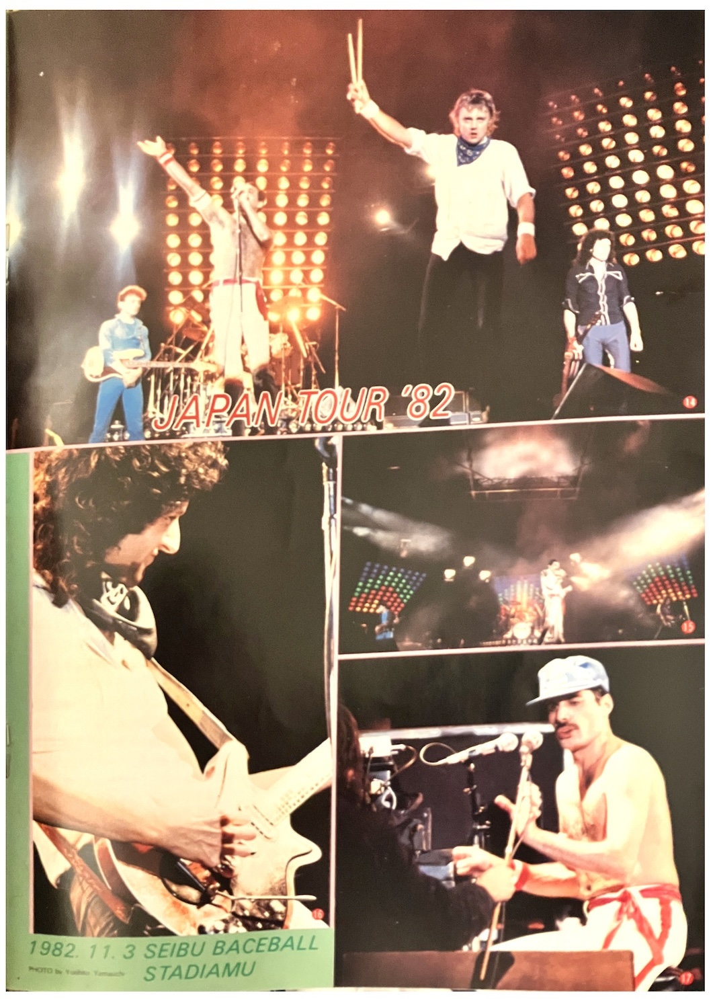

• It's well-known that the members of Queen are fond of Japan, but Freddie is especially known for his love of Japanese antiques. When he visited Japan in 1981, he reportedly had three tatami mats airshipped back to England, and this time he bought even more things, from plates and vases to Hakata dolls and among others, filling three large cardboard boxes with his purchases.
• Brian, known as a famil man, brought his wife Chrissy and their two children Jimmy and Louisa on this trip. He bought them so many toys that it presented a challenge to ship them back, especially in Fukuoka. Every time they were at an airport, whether it was Haneda or Chitose, they would buy toys. It was somewhat manageable with Louisa as she was still a baby, but Jimmy's requests presented a real challenge because what caught his eye seemed to be die-cast robots such as Gundam figurines. It seems what children want is truly universal!

• All the bandmembers and cre bought audio products as souvenirs. One particularly popular item was an Aiwa stereo with headphones. Roger was also delighted to purchase a complete Roland synthesizer set, and John for some reason enjoyed Japanese commercials so much that he recorded them and brought the tape back home with him!